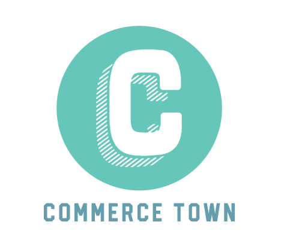

Commerce Town
Purpose
The purpose of Commerce Town is to create a network of businesspeople with the purpose of promoting commerce in Saratoga Spring City. Also, this website will help businesses to grow and promote their products and services on the Internet making the businesses in Saratoga Springs attractive to potential investors.
